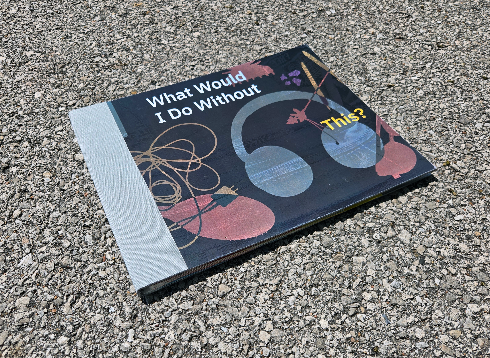
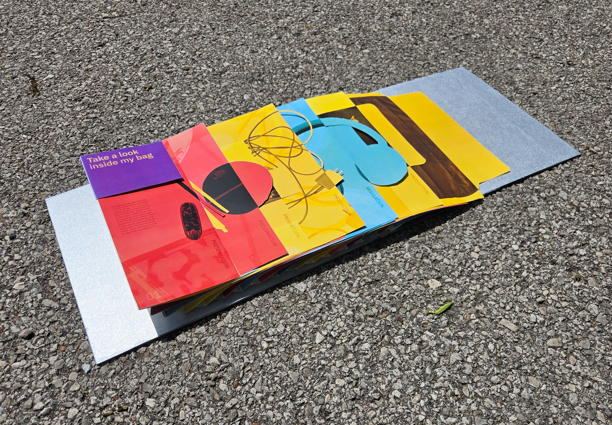
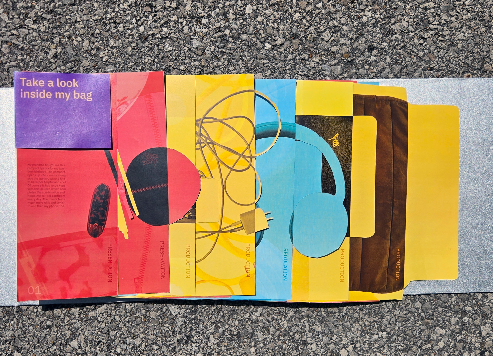

What Would I Do Without This?
Book ✸ Design
Year
Spring 2026 (3 weeks)
Client
Content to Cover: Designing Books
Tools
InDesign, Photoshop
Skills
Book Binding, Experiential Design, Image Manipulation
This interactive book analyzes everyday items as objects of deeply personal feelings and tendencies, using my own bag as a personal reflection of my habits, preferences, and flaws.
Each page contains, on the front side, a surface-level description of how I obtained the given object and why I choose to carry it with me every day. On the back, I reflect deeply on what I would do without this item, and decide if I would continue to keep carrying it or let it go.
To elevate this meditation on simple objects, I wanted the experience of this book to reflect the chaotic and sometimes stressful feeling of digging through my bag in search for a specific object. I adjusted each page to the size of the respective object and cut the silhouette of each image to be recognizable by touch, the sense most used when hurriedly searching for an item.
Each item has additionally been categorized and color-coded by purpose, reflecting my own impulses to strictly organize that which I find overwhelming and confusing. I found deeper thinking on these everyday items to be very interesting and thought-provoking, as I found myself writing a large portion for things I had thought to be fairly straightforward.



